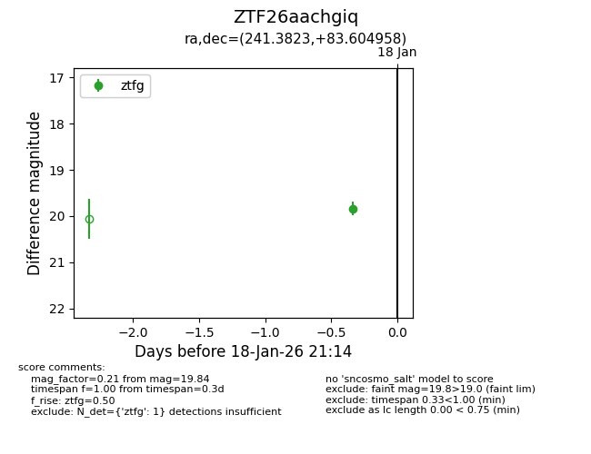
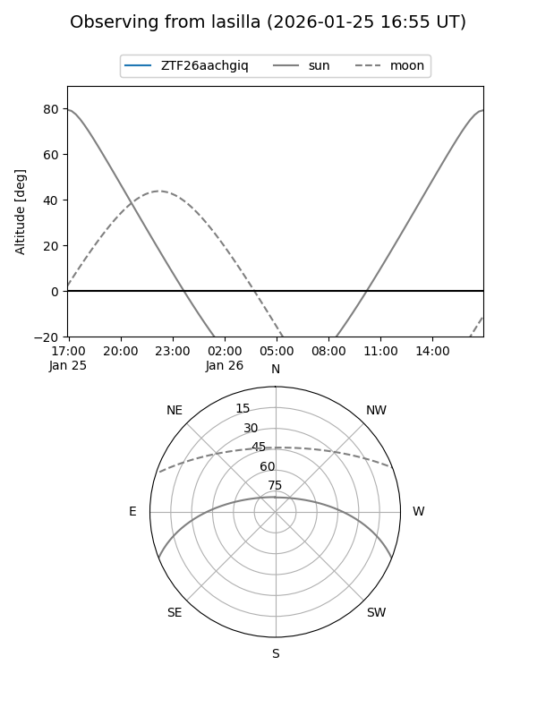
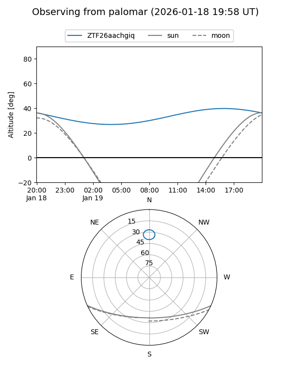
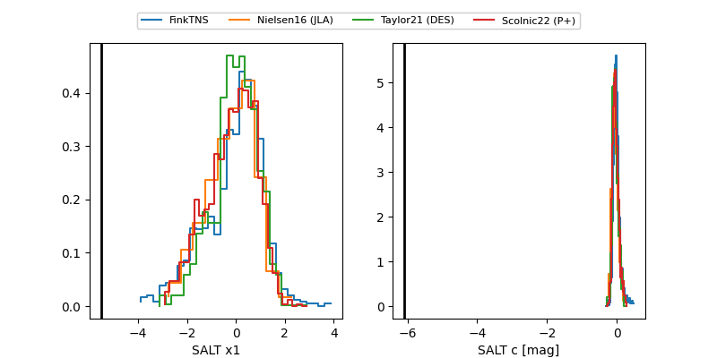

ZTF26aachgiq
Target ZTF26aachgiq at 2026-01-18 21:16
Aliases and brokers:
FINK: link
Lasair: link
ALeRCE: link
alt names
ZTF26aachgiq (ztf,fink_ztf)
Coordinates:
equatorial (ra, dec) = 241.3823,+83.60496
equatorial (HMS+DMS) = 16:05:31.75,+83:36:17.85
galactic (l, b) = (117.3301,+31.25193)
Flags:
Photometry:
last ztfg=19.84
1 ztfg detections
Lightcurve

Visibility


Additional plots
